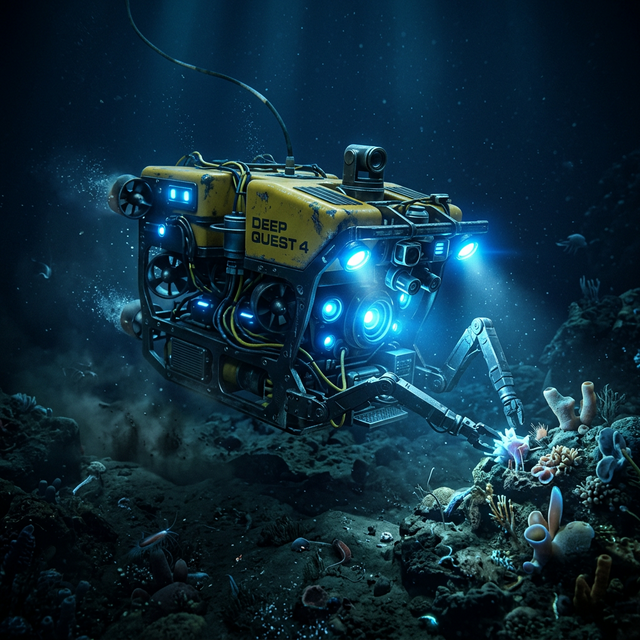

Ocean Tech
February 24, 2026
Underwater Robots
Underwater robots, also known as remotely operated vehicles (ROVs) or autonomous underwater vehicles (AUVs), play a crucial role in ocean exploration, underwater mining, and pipeline inspections.
Learn More